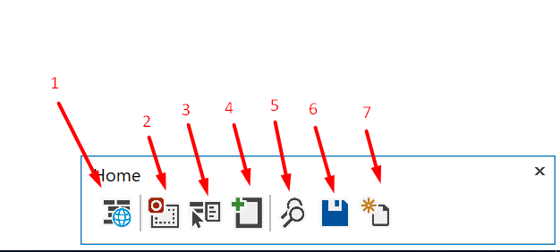
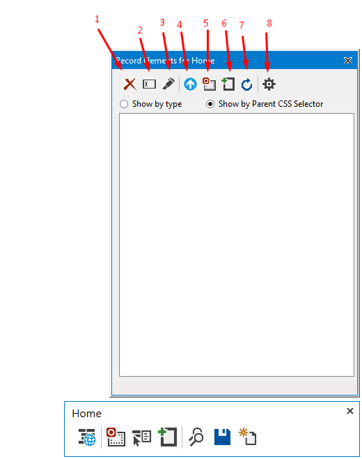

Tool Overview¶
You can start recording your website in two ways:
Creating a new UI Map file
Editing existing ones from Solution Explorer
Creating a new UI Map file¶
When a new UI Map is created, the extension automatically starts the recording session, you will see the chromedriver command line open up and a Chrome browser to appear.
Editing existing ones from Solution Explorer¶
There is two ways to add elements to the UI Map after its creation.
Right click on the UI Map file on the Solution Explorer and click the option Edit UI Map in Browser.

In the UI Map Editor, click on the Record Elements button to start a new recording.
Recorder Window and Controls¶
Once the recorder and browser are ready, you will see the Recorder Window at the left bottom corner of the screen.
Show UI Map Contents: Shows another window with all the controls included on the current UI Map.
Start Area Recording: Click on a div or content control in the brwoser and it will record the controls within.
Start Click Capture: Click on a specific control to add them to the UI Map.
Add control by CSS Selector: Add a control to the UI Map if you already know the CSS selector.
Locate all Controls: It will try to find all the controls currently in the UI Map and it will let you know which ones are present.
Save: Save UI Map changes
Create New UI Map File: It will create a new UI Map for quick recordings.
UI Map Contents Window¶
The UI Map Contents Window displays elements recorded into the UI Map and allow you to make modifications.
Delete elements: Delete selected items from UI Map after Save button is pressed(Context menu).
Rename element: Renames items after Save button is pressed(Double Click)(Context menu).
Highlight element: It will highlight the selected element in the browser if found(Context menu).
Update element using another element: When two items are selected, it will allow to update an element with another element properties(This will delete the source element)
Start Area Recording for saved areas: If any area recordings are present, it will start recording all the elements inside of them automatically based on the UI Map settings.
Add control by CSS Selector: Add a control to the UI Map if you already know the CSS selector.
Refresh selected control properties: For the selected control, it will refresh all the properties in the browser.
Recording Settings: It allows you to pick which controls to record and whether to record hidden controls.